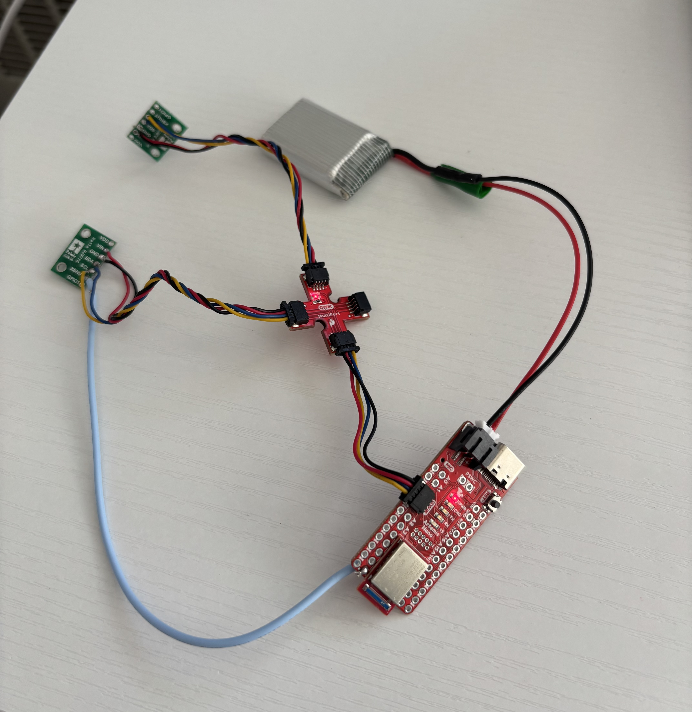
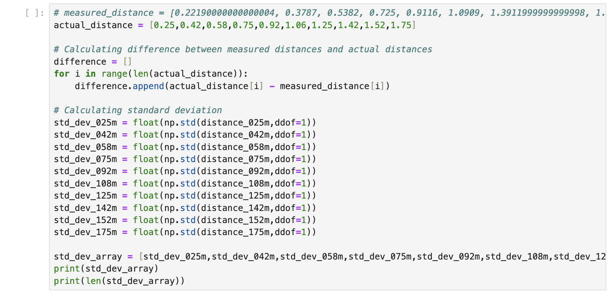
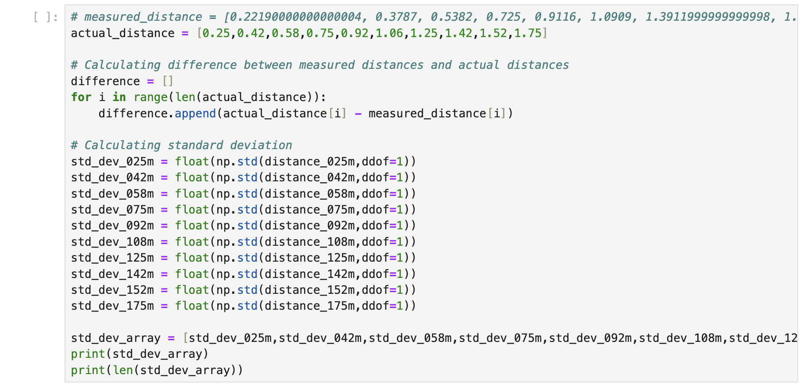
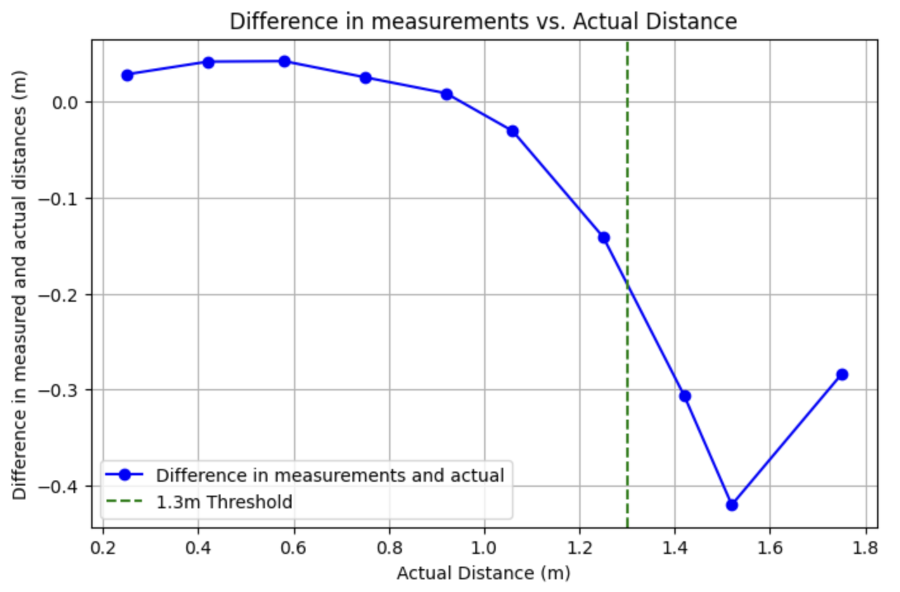
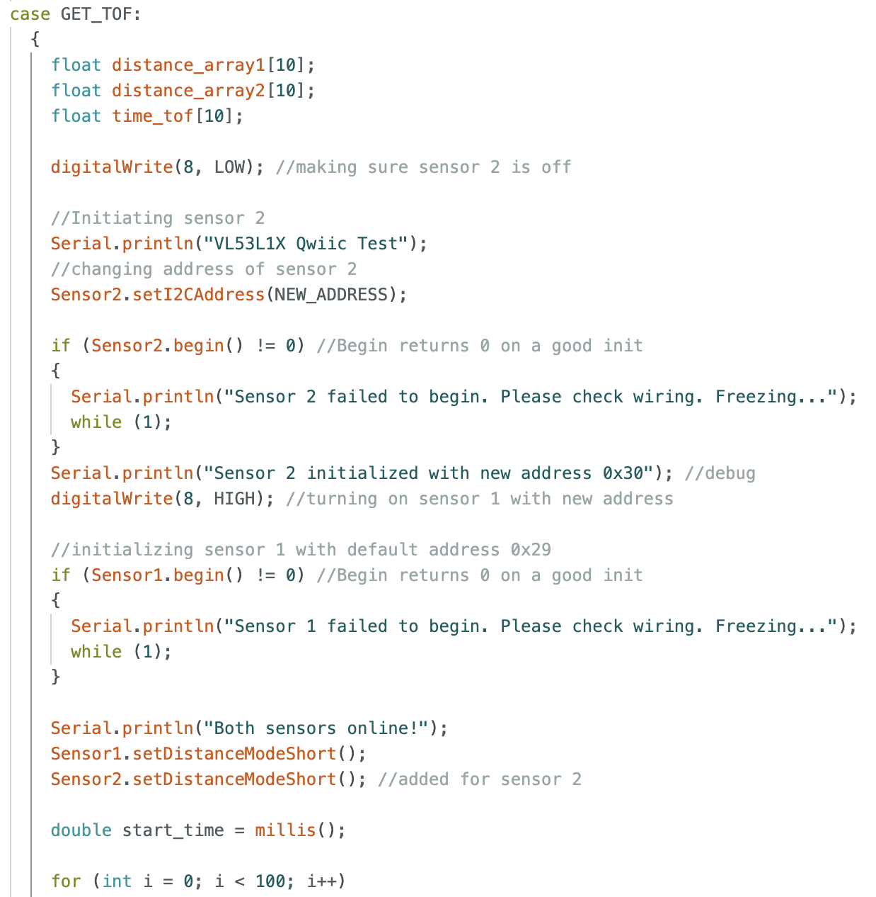
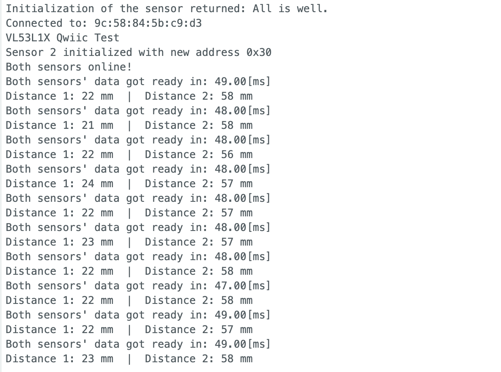
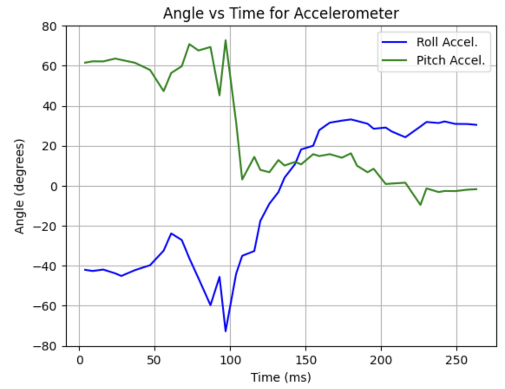

Lab 3: ToF
PRE-LAB
NOTE THE I2C ADDRESS: The default I2C address of the time of flight sensor according to the data sheet is 0x52.
TWO ToF SENSORS APPROACH: I intend to incorporate two ToF sensors on my robot to enhance the accuracy of obstacle detection. By using multiple sensors, I can average the measurements obtained from both devices, which will help mitigate any discrepancies in individual readings. The improved accuracy in measuring distances will significantly reduce the likelihood of collisions and potential damage to the robot, ensuring smoother operation and enhanced safety during its tasks.
PLACEMENT OF SENSORS: By positioning both ToF sensors at the front corners of the robot, I am maximizing the coverage area in the front which helps identify objects that may approach from the sides, such as a wall jutting out into its path. If both sensors were placed in the middle or one in the middle and one in the back, the robot might miss detecting these side obstacles, potentially leading to collisions. However, this corner placement may not detect certain obstacles directly in front of the robot if they are positioned too close, as the sensors might not have the required angle to accurately measure the distance. Furthermore, since the sensors are only located at the front, any obstacles that appear from behind the robot will go undetected, leaving the robot vulnerable to unexpected challenges.
SKETCH OF WIRING DIAGRAM: For my ToF sensors, I decided to programmatically change the address of the second distance sensor when it is powered on so I wired the XSHUT pin of one of the sensors to the A8 pin on the Artemis board.

TASKS
TASK 1: TOF SENSOR CONNECTION TO QWICC BREAKOUT BOARD
TASK 2: ARTEMIS SCANNING THE I2C DEVICE
In the data sheet, the default address for the time of flight sensor is listed as 0x52. However, the serial monitor output shows it as 0x29. This discrepancy arises because the data sheet presents the address in an 8-bit format, while Arduino utilizes a 7-bit address. The conversion from 0x52 to 0x29 occurs by shifting the 8-bit address one bit to the right: 0x52 >> 1 = 0x29. This removes the write bit (0).

TASK 3: SENSOR DATA WITH CHOSEN MODE
The ToF sensor supports three distance modes: Short, Medium, and Long. Short mode provides the highest resistance to ambient lighting interference, making it the most reliable option in well-lit environments. However, it has the shortest range, reaching up to 1.3 meters. Medium mode extends the sensor’s range to 3 meters. Long mode allows the sensor to detect objects up to 4 meters away, but it is the most sensitive to ambient lighting, making it more prone to inaccuracies in bright environments. Since I am prioritizing accuracy over range in my data collection, I have chosen to use Short mode for my final robot.
Here is a picture of the setup for data collection:

I made a new command in Arduino to collect the data from the ToF sensor :

And this is the Python side:
 

To measure the range of my ToF I recorded measurements in evenly spaced distances between 0.25m and 1.75m from my computer to a stand. It can be seen in the graph below that discrepancies between the measured and actual distances become more noticeable beyond 1.3m.

To evaluate accuracy, I plotted the difference between the measured and actual distances against the actual distances. It is important to note that some human error may be present, as the placement of the sensor may not have been perfectly precise. However, after the 1.3m threshold the difference starts being larger.
In the standard deviation versus actual distance plot seen below, the standard deviation remains between 2.5–5 mm until it approaches the 1.3 m threshold, where it begins to increase.

To analyze the ranging time, I recorded a time array while collecting distance measurements on the Arduino side and then passed it to the Python side. Using this data, I calculated the mean ranging time for each set of collected distance measurements which can be seen below.

TASK 4: TWO TOF SENSORS AND IMU WORKING IN PARALLEL
To integrate and collect data of the second ToF sensor I changed the address of my second distance sensor and set its XSHUT pin to high so it would program it in the sensor. For this I added the section shown below into my GET_TOF command in Arduino (full code shown in previous task):
For the rest of the code of distance sensor 2 I just duplicated the commands that were used for distance sensor 1. This is the output of both distance sensors in the Serial Monitor:
This is the output when integrating the IMU data:
TASK 5: TOF SENSOR SPEED
To measure how fast my loop executes I collected the time before and after going into my loop that checks whether both sensors' data is ready. The loop is right before collecting the data and storing the values in an array (full code seen previously). The limiting factor in this case is waiting until both sensors are ready to start collecting data. This is the code snippet in my GET_TOF command:

And this is the output in the Serial Monitor:
TASK 6: TIME V DISTANCE
For this, I placed a box in front of my ToF sensors and moved the entire setup (IMU and ToF sensors) back and forth relative to the box while simultaneously moving the IMU up and down. One of the ToF sensors was slightly farther back than the other which is why there is a slight offset between them. This is the ToF sensors' plot:

TASK 7: TIME V ANGLE
These are the plots for the accelerometer and gyroscope data with the same movement as before:
|  |  |
5000 LEVEL - DISCUSSION: INFRARED TRANSMISSION BASED SENSORS
Two common types of distance sensors are LiDAR sensors and infrared (IR) proximity sensors. According to the "Distance Sensor Comparison Guide" video by SparkFun Electronics on YouTube, a LiDAR sensor works by emitting continuous pulses of laser light and measuring the time it takes for the beam to return to the sensor. In contrast, an IR proximity sensor determines distance by measuring the intensity of the reflected infrared beam.LiDAR sensors are ideal for long-range measurements, but they have high power consumption and are more expensive compared to other distance sensors. On the other hand, IR proximity sensors offer moderate range and resolution at a lower cost, but they are highly sensitive to ambient light and surface colors, which can affect their accuracy.
5000 LEVEL: SENSITIVITY OF SENSORS TO COLORS AND TEXTURES
I observed the measurements of each distance sensor for a blanket texture and the colors red, blue and yellow. For all cases, the values remained within the same range, aside from slight variations due to minor changes in sensor positioning from human error. This is the setup:
 |
 |
I then just proceeded to change the color in the screen for each set of data. The data collected for each color is shown below:
REFERENCES:
For this Lab I referenced the past lab reports of Mikayla Lahr and Patty Meza.